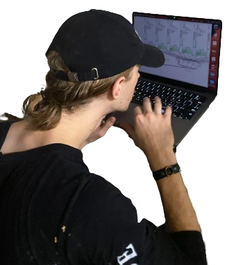

an interactive sound exhibit displayed at aisleisle 9/27/2024 in collaboration with oscar muendel
 built using pure data and python using mediapipe, opencv, machine-learning, and osc (open-sound-control)
equipment:
4x speaker
4x tripod
1x laptop
a project about controlling and isolating harmonic tones using the body